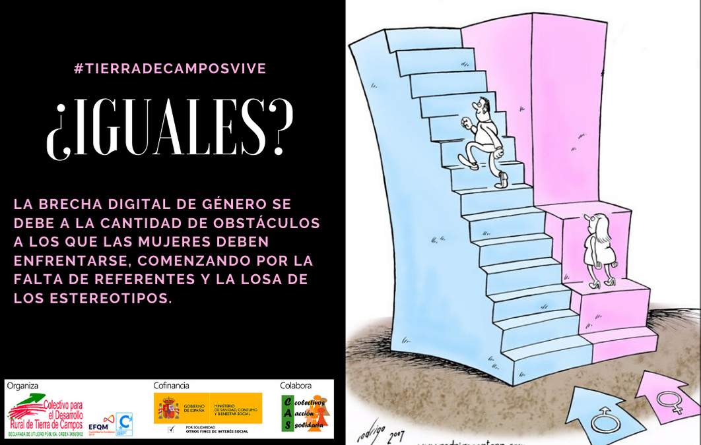

La brecha digital de género se refiere a las diferencias en el acceso, uso y aprovechamiento de las tecnologías de la información y la comunicación (TIC) entre hombres y mujeres. Esta brecha no solo implica la falta de acceso a internet o dispositivos, sino también la falta de habilidades digitales para utilizar estas tecnologías de manera efectiva y la discriminación en el ámbito tecnológico.
Factores que contribuyen a la brecha digital de género
- Acceso desigual: Las mujeres pueden enfrentar barreras económicas, geográficas o culturales que les impiden acceder a la tecnología.
- Alfabetización digital: La falta de habilidades digitales puede limitar la capacidad de las mujeres para utilizar la tecnología de manera efectiva. Estereotipos de género: estereotipos que asocian la tecnología con lo masculino pueden disuadir a las mujeres de participar en carreras STEM y utilizar la tecnología.
- Acoso en línea: El acoso y la violencia en línea pueden afectar especialmente a las mujeres, creando un ambiente inseguro y desalentador para su participación digital.
- Falta de representación: La baja representación de mujeres en puestos de liderazgo y en la creación de contenido digital puede contribuir a una visión limitada del mundo digital
Inpacto en las mujeres
- Laborales:Dificulta la participación en trabajos en línea y el desarrollo de habilidades digitales necesarias para el mercado laboral.
- Educación y Capacitación:Limita el acceso a plataformas de educación en línea y nuevas formas de adquirir conocimientos digitales.
- autonomia Económica y Social: Reduce las posibilidades de empoderamiento al no poder acceder a servicios financieros digitales y otras herramientas de participación.